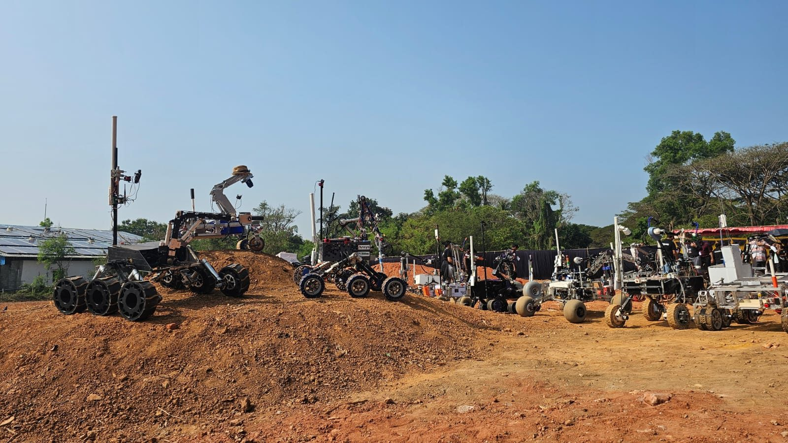

Team Captain · Jan 2024 – present
CRISS Robotics, BITS Pilani
Leads the space robotics and rover team of BITS Pilani: 50+ students across four subsystems on a US$20,000+ budget. Placed 3rd at the European Rover Challenge 2025 and became the first Indian team to qualify for the Australian Rover Challenge 2026.
- Design: the rover’s chassis (machined and welded aluminium), wheels, actuators, steering and robotic arm. The steering can turn the rover on the spot or use Ackermann geometry, switched by the 3D-printed cam mechanism.
- Mass: cut the rover’s mass from 78 kg to 51 kg by 3D printing about half of the connecting parts and laser-cutting the covers.
- Autonomy & payloads: a camera-based autonomous spectroscope with ROS and OpenCV; the imaging and infrared spectrometer payloads and the soil sample collection system.
- Other results: 3rd place, International Rover Design Challenge (SPROS) 2025; 1st place, Project Prototype Presentation at APOGEE, BITS Pilani, in 2024 and 2025.